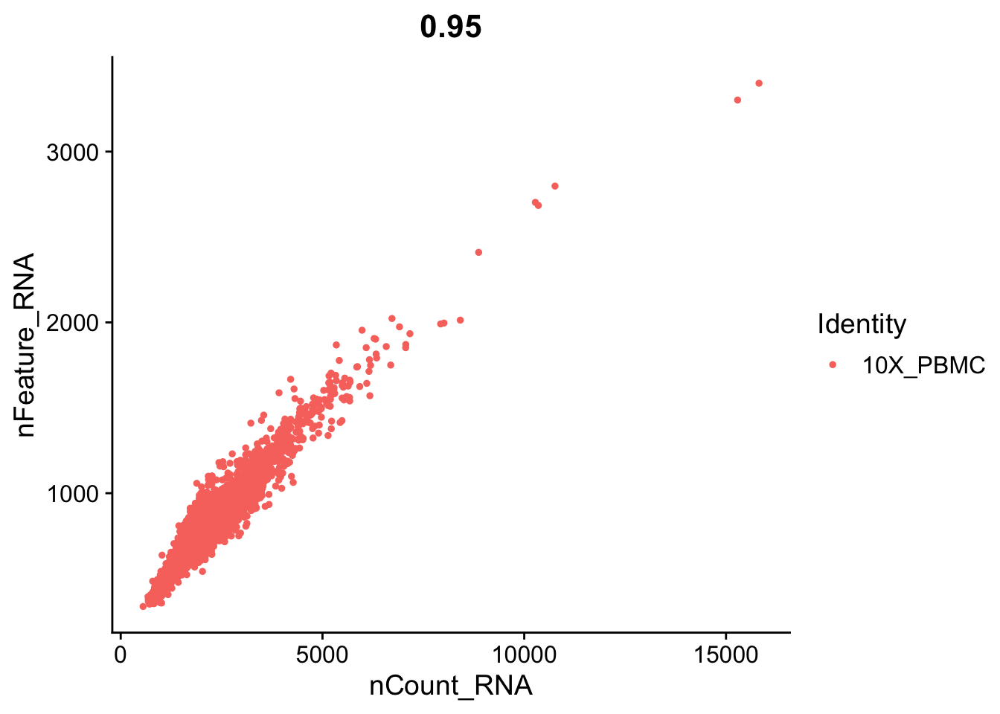
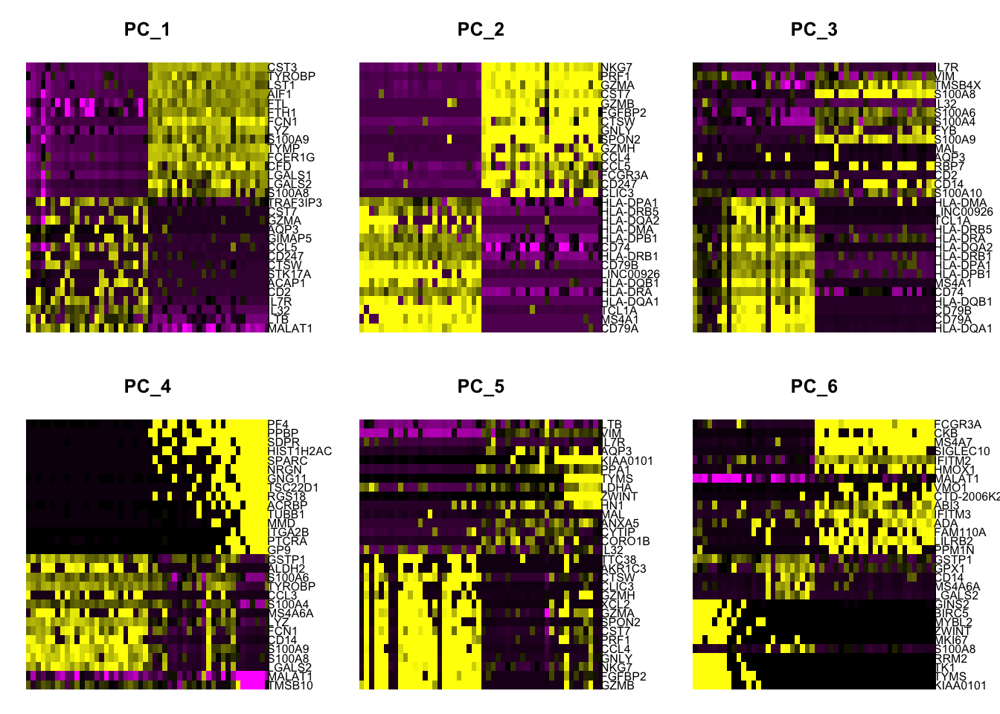
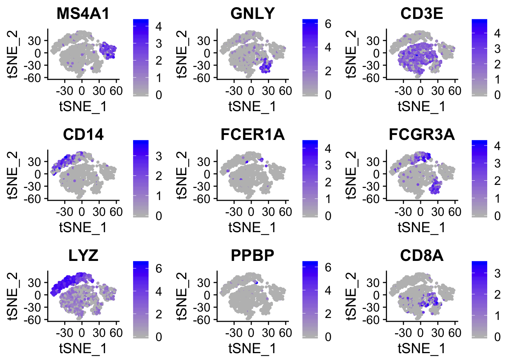

6 Feature Selection and Cluster Analysis
6.1 Abstract
Many methods have been used to determine differential gene expression from single-cell RNA (scRNA)-seq data. We evaluated 36 approaches using experimental and synthetic data and found considerable differences in the number and characteristics of the genes that are called differentially expressed. Prefiltering of lowly expressed genes has important effects, particularly for some of the methods developed for bulk RNA-seq data analysis. However, we found that bulk RNA-seq analysis methods do not generally perform worse than those developed specifically for scRNA-seq. We also present conquer, a repository of consistently processed, analysis-ready public scRNA-seq data sets that is aimed at simplifying method evaluation and reanalysis of published results. Each data set provides abundance estimates for both genes and transcripts, as well as quality control and exploratory analysis reports. (???)
Cells are the basic building blocks of organisms and each cell is unique. Single-cell RNA sequencing has emerged as an indispensable tool to dissect the cellular heterogeneity and decompose tissues into cell types and/or cell states, which offers enormous potential for de novo discovery. Single-cell transcriptomic atlases provide unprecedented resolution to reveal complex cellular events and deepen our understanding of biological systems. In this review, we summarize and compare single-cell RNA sequencing technologies, that were developed since 2009, to facilitate a well-informed choice of method. The applications of these methods in different biological contexts are also discussed. We anticipate an ever-increasing role of single-cell RNA sequencing in biology with further improvement in providing spatial information and coupling to other cellular modalities. In the future, such biological findings will greatly benefit medical research. (???)
6.2 Seurat Tutorial
Task: Change the directory name to mydir/ where you saved your data
library(Seurat)
library(dplyr)
library(ggplot2)
library(CountClust)
dirname <- "/Users/kgosik/Documents/data/cellranger/pbmc3k/"
counts_matrix_filename = paste0(dirname,"/filtered_gene_bc_matrices/hg19/")
counts <- Read10X(data.dir = counts_matrix_filename) # Seurat function to read in 10x count data
# To minimize memory use on the docker - choose only the first 1000 cells
counts <- counts[,1:1000]### seurat<-CreateSeuratObject(raw.data = counts, ? = 3, ? = 350, project = "10X_NSCLC")
seurat <- CreateSeuratObject(counts = counts, min.cells = 3, min.features = 350, project = "10X_NSCLC")6.2.1 Preprocessing Steps
This was all covered in the last Lab!
# The number of genes and UMIs (nGene and nUMI) are automatically calculated
# for every object by Seurat. For non-UMI data, nUMI represents the sum of
# the non-normalized values within a cell We calculate the percentage of
# mitochondrial genes here and store it in percent.mito using AddMetaData.
# We use object@raw.data since this represents non-transformed and
# non-log-normalized counts The % of UMI mapping to MT-genes is a common
# scRNA-seq QC metric.
seurat[["percent.mt"]] <- PercentageFeatureSet(object = seurat, pattern = "^MT-")
##VlnPlot(object = seurat, features = c("nFeature_RNA", "nCount_RNA", "percent.mt"), ncol = 3)# GenePlot is typically used to visualize gene-gene relationships, but can
# be used for anything calculated by the object, i.e. columns in
# object@meta.data, PC scores etc. Since there is a rare subset of cells
# with an outlier level of high mitochondrial percentage and also low UMI
# content, we filter these as well
par(mfrow = c(1, 2))
FeatureScatter(object = seurat, feature1 = "nCount_RNA", feature2 = "percent.mt")

Already A Subset of the Data
This is not run becuase we are already working with a subset. This is here for reference.
# We filter out cells that have unique gene counts over 2,500 or less than
# 200 Note that low.thresholds and high.thresholds are used to define a
# 'gate'. -Inf and Inf should be used if you don't want a lower or upper
# threshold.
seurat <- SubsetData(object = seurat,
subset.names = c("nFeature_RNA", "percent.mt"),
low.thresholds = c(200, -Inf),
high.thresholds = c(2500, 0.1))## Warning: 'SubsetData' is deprecated.
## Use 'subset' instead.
## See help("Deprecated")## Warning: 'OldWhichCells' is deprecated.
## Use 'WhichCells' instead.
## See help("Deprecated")seurat <- FindVariableFeatures(object = seurat,
mean.function = ExpMean,
dispersion.function = LogVMR,
do.plot = FALSE)## Warning: The following arguments are not used: do.plot6.2.2 Start of Identifying Cell Types
6.2.2.1 Scaling
This part is where you mean center the data, substract the mean. You also divide by the standard deviation to make everything to a ‘standard normal’, where the mean is zero and the standard deviation is 1.
## Regressing out batch, percent.mt## Centering and scaling data matrixTry Regressing Other Variables
## randomly making a batch id data.frame
batch_ids <- data.frame(barcode = rownames(seurat@meta.data),
batch_id = sample(0:2, NROW(seurat@meta.data), replace = TRUE),
stringsAsFactors = FALSE)
row.names(batch_ids) <- row.names(seurat@meta.data)
seurat <- AddMetaData(object = seurat, metadata = batch_ids, col.name = NULL)
seurat <- ScaleData(object = seurat, vars.to.regress = 'batch_id')## Regressing out batch_id## Centering and scaling data matrix6.2.2.2 Perform linear dimensional reduction (PCA)
This will run pca on the
seurat <- RunPCA(object = seurat,
pc.genes = seurat@assays$RNA@var.genes,
do.print = TRUE,
pcs.print = 1:5,
genes.print = 5)## PC_ 1
## Positive: MALAT1, RPS27A, LTB, IL32, RPL10A, AES, GLTSCR2, RPL19, CD69, ACAP1
## B2M, CD27, STK17A, CTSW, CD247, JUN, GIMAP5, RARRES3, SELL, CCL5
## GZMA, CST7, CD8B, MYC, MAL, C12orf57, TRAF3IP3, CMPK1, TNFAIP8, GZMK
## Negative: CST3, AIF1, TYROBP, LST1, FTL, FTH1, FCER1G, S100A9, LYZ, CFD
## FCN1, CD68, TYMP, LGALS1, IFITM3, SPI1, SERPINA1, CTSS, PSAP, S100A8
## LGALS2, S100A11, SAT1, IFI30, CFP, COTL1, LGALS3, PYCARD, TKT, S100A6
## PC_ 2
## Positive: NKG7, GZMB, CST7, PRF1, GZMA, FGFBP2, CTSW, B2M, GNLY, GZMH
## CCL5, SPON2, CD247, CCL4, XCL2, AKR1C3, FCGR3A, CLIC3, HOPX, SRGN
## IL32, TTC38, S100A4, APMAP, ANXA1, RARRES3, CD99, PRSS23, TPST2, HAVCR2
## Negative: CD79A, MS4A1, HLA-DQA1, HLA-DRA, HLA-DQB1, TCL1A, LINC00926, CD79B, VPREB3, CD74
## HLA-DMA, HLA-DRB1, HLA-DPB1, HLA-DMB, BANK1, HLA-DPA1, HLA-DQA2, HLA-DRB5, CD37, EAF2
## KIAA0125, LTB, SPIB, IRF8, BLNK, IGLL5, PPAPDC1B, RPL10A, RPL19, SWAP70
## PC_ 3
## Positive: HIST1H2AC, PF4, TSC22D1, ACRBP, PPBP, TMEM40, PTCRA, MAP3K7CL, SDPR, MMD
## TUBB1, HIST1H2BJ, NRGN, GNG11, ITGA2B, ESAM, CLDN5, CMTM5, SPARC, SLC40A1
## RGS18, NEXN, RUFY1, PCP2, GP9, F13A1, CD9, PNMA1, CA2, ARG2
## Negative: RPL19, MT-CO1, S100A8, S100A4, LGALS2, S100A9, S100A6, TYROBP, CYBA, TSPO
## NACA, CCL3, FCN1, MS4A6A, CD14, GSTP1, NKG7, PRF1, IFI6, LGALS1
## CST7, LYZ, GZMA, NEAT1, FGFBP2, NCF2, MALAT1, RPL10A, CDA, VIM
## PC_ 4
## Positive: VIM, FYB, TMSB4X, RGS10, S100A8, IL32, GIMAP7, S100A6, S100A4, MAL
## NDFIP1, NGFRAP1, CD27, GIMAP5, S100A9, CD14, S100A12, NELL2, CD44, LGALS2
## S100A11, MS4A6A, TRABD2A, LYZ, C12orf57, FCN1, AIF1, CD5, TSPO, ANXA1
## Negative: HLA-DQA1, CD79A, CD79B, MS4A1, HLA-DQB1, CD74, HLA-DPB1, HLA-DRB1, HLA-DPA1, HLA-DRA
## LINC00926, HLA-DQA2, TCL1A, HLA-DRB5, VPREB3, GZMB, FGFBP2, HLA-DMB, BANK1, GNLY
## PRF1, NKG7, HLA-DMA, CST7, PDLIM1, KIAA0125, SPIB, SPON2, EAF2, FCGR3A
## PC_ 5
## Positive: LTB, NAP1L1, CKB, VMO1, MS4A4A, EMR2, CDKN1C, NACA, HES4, LYPD2
## PILRA, MS4A7, TRAF3IP3, PTGES3, LILRA3, GDI2, VIM, RP11-290F20.3, RPS27A, RPL10A
## TUBA1B, CXCL16, IFITM2, CYTIP, ANXA5, CD27, CTD-2006K23.1, ICAM4, ABI3, TPPP3
## Negative: S100A8, LGALS2, GZMB, MS4A6A, S100A9, FGFBP2, GNLY, CD14, NKG7, S100A12
## SPON2, CST7, CCL3, PRF1, GSTP1, GPX1, CCL4, VCAN, GZMA, TYROBP
## PRSS23, CCL5, AKR1C3, XCL2, GZMH, LYZ, IGFBP7, FCN1, CYBA, HAVCR26.2.2.3 Perform linear dimensional reduction (ICA)
Try running Independent Component Analysis. If you need help with the inputs try using the ?RunICA menu.
## IC_ 1
## Positive: IL32, MALAT1, RPS27A, LTB, AES, B2M, CD27, GIMAP7, ACAP1, GIMAP5
## RPL10A, RARRES3, TRAF3IP3, GLTSCR2, MAL, CD247, JUN, C12orf57, CD69, RPL19
## ITM2A, NGFRAP1, CD8B, NDFIP1, TNFAIP8, NELL2, TRABD2A, TUBA4A, CMPK1, STK17A
## Negative: HLA-DRA, HLA-DRB1, TYROBP, CST3, S100A9, FTL, LYZ, LGALS2, S100A8, HLA-DPA1
## FCN1, HLA-DRB5, CD74, HLA-DPB1, FCER1G, FTH1, LST1, AIF1, CTSS, TYMP
## LGALS1, CYBA, CFD, HLA-DMA, SPI1, CD68, GSTP1, PSAP, PYCARD, MS4A6A
## IC_ 2
## Positive: S100A4, S100A6, S100A8, S100A9, TMSB4X, S100A11, TYROBP, LGALS1, FCN1, LYZ
## AIF1, CST3, LGALS2, FCER1G, LST1, CFD, TYMP, CD14, FTL, LGALS3
## MS4A6A, FTH1, SRGN, CD68, NEAT1, PSAP, GAPDH, TIMP1, GSTP1, VIM
## Negative: CD79A, MS4A1, CD79B, HLA-DQA1, LINC00926, TCL1A, HLA-DQB1, VPREB3, BANK1, HLA-DQA2
## KIAA0125, SPIB, CD74, LTB, PDLIM1, HLA-DPB1, PPAPDC1B, HLA-DMB, BLNK, EAF2
## IGLL5, HLA-DRA, SWAP70, BLK, HLA-DPA1, CD37, RPS27A, HLA-DRB1, AC079767.4, MZB1
## IC_ 3
## Positive: MALAT1, TCL1A, S100A12, RPS27A, LINC00926, S100A8, CCL5, RPL19, RPL10A, MS4A1
## VCAN, CD79A, CTSW, KCNG1, VPREB3, AC003075.4, STK17A, CST7, JUND, MYL9
## SELL, MS4A6A, SEC14L2, KLRC1, MGST1, CD69, RP5-821D11.7, PRSS23, IER3, CD8B
## Negative: FCGR3A, PILRA, RP11-290F20.3, RHOC, MS4A7, HES4, LRRC25, CKB, SERPINA1, ABI3
## COTL1, IFITM3, MS4A4A, EMR2, CDKN1C, VMO1, SPI1, LILRA3, CEBPB, WARS
## HCK, LST1, BID, IFITM2, ANXA5, TIMP1, CXCL16, ACTB, TPPP3, FCER1G
## IC_ 4
## Positive: GZMB, NKG7, FGFBP2, CST7, PRF1, GNLY, GZMA, SPON2, CTSW, GZMH
## CCL4, XCL2, AKR1C3, CCL5, CLIC3, B2M, HOPX, PRSS23, TTC38, CD247
## HAVCR2, APMAP, KLRF1, XCL1, GPR56, FCRL6, IGFBP7, FCGR3A, TPST2, CD160
## Negative: LTB, VIM, AIF1, FTH1, COTL1, RPL10A, LST1, RPL19, EEF2, FTL
## LYZ, NAP1L1, S100A8, HLA-DRA, PLP2, CFP, CST3, CD68, CFD, FCN1
## LGALS2, C6orf48, S100A9, GPX1, SERPINA1, CTSS, LINC00936, SAT1, SPI1, FAM26F
## IC_ 5
## Positive: PF4, HIST1H2AC, PPBP, TSC22D1, ACRBP, TMEM40, PTCRA, NRGN, MAP3K7CL, SDPR
## GNG11, MMD, ITGA2B, HIST1H2BJ, TUBB1, ESAM, CLDN5, SPARC, CMTM5, RGS18
## SLC40A1, F13A1, RUFY1, PCP2, GP9, NEXN, CD9, CA2, MPP1, PNMA1
## Negative: RPL19, RPL10A, MALAT1, NACA, MT-CO1, RPS27A, GLTSCR2, VIM, SRSF3, B2M
## RBM3, TRAF3IP3, AES, CSNK2B, RAC2, HSP90AB1, NHP2L1, KLF6, VAMP8, EEF2
## TSPO, NDUFA11, C1QBP, CDC37, IL32, PSMC5, ZFP36, MED28, COPS6, ISG15
6.2.2.5 Visualizing ICA in Different Ways
# ProjectDim scores each gene in the dataset (including genes not included
# in the PCA) based on their correlation with the calculated components.
# Though we don't use this further here, it can be used to identify markers
# that are strongly correlated with cellular heterogeneity, but may not have
# passed through variable gene selection. The results of the projected PCA
# can be explored by setting use.full=T in the functions above
seurat <- ProjectDim(object = seurat, reduction = "pca")## PC_ 1
## Positive: MALAT1, RPS27A, LTB, IL32, RPL10A, AES, GLTSCR2, RPL19, CD69, ACAP1
## B2M, CD27, STK17A, CTSW, CD247, JUN, GIMAP5, RARRES3, SELL, CCL5
## Negative: CST3, AIF1, TYROBP, LST1, FTL, FTH1, FCER1G, S100A9, LYZ, CFD
## FCN1, CD68, TYMP, LGALS1, IFITM3, SPI1, SERPINA1, CTSS, PSAP, S100A8
## PC_ 2
## Positive: NKG7, GZMB, CST7, PRF1, GZMA, FGFBP2, CTSW, B2M, GNLY, GZMH
## CCL5, SPON2, CD247, CCL4, XCL2, AKR1C3, FCGR3A, CLIC3, HOPX, SRGN
## Negative: CD79A, MS4A1, HLA-DQA1, HLA-DRA, HLA-DQB1, TCL1A, LINC00926, CD79B, VPREB3, CD74
## HLA-DMA, HLA-DRB1, HLA-DPB1, HLA-DMB, BANK1, HLA-DPA1, HLA-DQA2, HLA-DRB5, CD37, EAF2
## PC_ 3
## Positive: HIST1H2AC, PF4, TSC22D1, ACRBP, PPBP, TMEM40, PTCRA, MAP3K7CL, SDPR, MMD
## TUBB1, HIST1H2BJ, NRGN, GNG11, ITGA2B, ESAM, CLDN5, CMTM5, SPARC, SLC40A1
## Negative: RPL19, MT-CO1, S100A8, S100A4, LGALS2, S100A9, S100A6, TYROBP, CYBA, TSPO
## NACA, CCL3, FCN1, MS4A6A, CD14, GSTP1, NKG7, PRF1, IFI6, LGALS1
## PC_ 4
## Positive: VIM, FYB, TMSB4X, RGS10, S100A8, IL32, GIMAP7, S100A6, S100A4, MAL
## NDFIP1, NGFRAP1, CD27, GIMAP5, S100A9, CD14, S100A12, NELL2, CD44, LGALS2
## Negative: HLA-DQA1, CD79A, CD79B, MS4A1, HLA-DQB1, CD74, HLA-DPB1, HLA-DRB1, HLA-DPA1, HLA-DRA
## LINC00926, HLA-DQA2, TCL1A, HLA-DRB5, VPREB3, GZMB, FGFBP2, HLA-DMB, BANK1, GNLY
## PC_ 5
## Positive: LTB, NAP1L1, CKB, VMO1, MS4A4A, EMR2, CDKN1C, NACA, HES4, LYPD2
## PILRA, MS4A7, TRAF3IP3, PTGES3, LILRA3, GDI2, VIM, RP11-290F20.3, RPS27A, RPL10A
## Negative: S100A8, LGALS2, GZMB, MS4A6A, S100A9, FGFBP2, GNLY, CD14, NKG7, S100A12
## SPON2, CST7, CCL3, PRF1, GSTP1, GPX1, CCL4, VCAN, GZMA, TYROBP6.2.2.6 Genes by PCs

Check other PCs to plot
seurat <- JackStraw(object = seurat, reduction = "pca")
seurat <- ScoreJackStraw(seurat, dims = 1:20)
# save.SNN = T saves the SNN so that the clustering algorithm can be rerun
# using the same graph but with a different resolution value (see docs for
# full details)
set.seed(2019)
seurat <- FindNeighbors(object = seurat, dims = 1:10)## Computing nearest neighbor graph## Computing SNN## Warning: The following arguments are not used: reduction, dims
## Warning: The following arguments are not used: reduction, dims## Modularity Optimizer version 1.3.0 by Ludo Waltman and Nees Jan van Eck
##
## Number of nodes: 987
## Number of edges: 35554
##
## Running Louvain algorithm...
## Maximum modularity in 10 random starts: 0.7739
## Number of communities: 8
## Elapsed time: 0 seconds6.2.3 Run non-linear dimensional reduction (UMAP/tSNE)
Seurat offers several non-linear dimensional reduction techniques, such as tSNE and UMAP, to visualize and explore these datasets. The goal of these algorithms is to learn the underlying manifold of the data in order to place similar cells together in low-dimensional space. Cells within the graph-based clusters determined above should co-localize on these dimension reduction plots. As input to the UMAP and tSNE, we suggest using the same PCs as input to the clustering analysis.
set.seed(runif(100))
seurat <- RunTSNE(seurat, reduction.use = "pca", dims.use = 1:10, perplexity=10)
# note that you can set do.label=T to help label individual clusters
DimPlot(object = seurat, reduction = "tsne")
## Warning: The following arguments are not used: perplexity## 16:57:38 UMAP embedding parameters a = 0.9922 b = 1.112## 16:57:38 Read 987 rows and found 10 numeric columns## 16:57:38 Using Annoy for neighbor search, n_neighbors = 30## 16:57:38 Building Annoy index with metric = cosine, n_trees = 50## 0% 10 20 30 40 50 60 70 80 90 100%## [----|----|----|----|----|----|----|----|----|----|## **************************************************|
## 16:57:38 Writing NN index file to temp file /var/folders/_1/7d41wl1d0nv1vxmgmcbn5jfj84xmh7/T//RtmpHKteoJ/file1357d476ddc5b
## 16:57:38 Searching Annoy index using 1 thread, search_k = 3000
## 16:57:38 Annoy recall = 100%
## 16:57:39 Commencing smooth kNN distance calibration using 1 thread
## 16:57:40 Initializing from normalized Laplacian + noise
## 16:57:40 Commencing optimization for 500 epochs, with 38670 positive edges
## 16:57:42 Optimization finished# note that you can set do.label=T to help label individual clusters
DimPlot(object = seurat, reduction = "umap")# find all markers of cluster 1
cluster1.markers <- FindMarkers(object = seurat, ident.1 = 1, min.pct = 0.25)
print(x = head(x = cluster1.markers, n = 5))## p_val avg_logFC pct.1 pct.2 p_val_adj
## S100A8 1.586796e-147 3.698205 0.951 0.095 1.867024e-143
## LGALS2 4.746642e-147 2.612902 0.886 0.056 5.584899e-143
## S100A9 2.397414e-123 3.745692 0.978 0.217 2.820797e-119
## MS4A6A 1.419272e-115 1.881602 0.674 0.024 1.669916e-111
## FCN1 8.514604e-113 2.360585 0.924 0.154 1.001828e-108# find all markers distinguishing cluster 2 from clusters 0 and 1
cluster5.markers <- FindMarkers(object = seurat, ident.1 = 5, ident.2 = c(0, 1), min.pct = 0.25)
print(x = head(x = cluster5.markers, n = 5))## p_val avg_logFC pct.1 pct.2 p_val_adj
## FCGR3A 3.353326e-65 2.6292920 0.968 0.089 3.945523e-61
## RHOC 2.286079e-49 1.7673220 0.921 0.119 2.689801e-45
## CDKN1C 1.882880e-39 0.9945063 0.460 0.007 2.215397e-35
## HES4 5.069482e-37 1.1358796 0.619 0.047 5.964753e-33
## CKB 1.398361e-35 0.9644735 0.365 0.000 1.645312e-31# find markers for every cluster compared to all remaining cells, report
# only the positive ones
pbmc.markers <- FindAllMarkers(object = seurat, only.pos = TRUE, min.pct = 0.25, thresh.use = 0.25)## Calculating cluster 0## Calculating cluster 1## Calculating cluster 2## Calculating cluster 3## Calculating cluster 4## Calculating cluster 5## Calculating cluster 6## Calculating cluster 7## # A tibble: 16 x 7
## # Groups: cluster [8]
## p_val avg_logFC pct.1 pct.2 p_val_adj cluster gene
## <dbl> <dbl> <dbl> <dbl> <dbl> <fct> <chr>
## 1 1.20e- 43 1.06 0.529 0.115 1.41e- 39 0 CCR7
## 2 1.71e- 29 0.864 0.407 0.094 2.01e- 25 0 LEF1
## 3 1.59e-147 3.70 0.951 0.095 1.87e-143 1 S100A8
## 4 2.40e-123 3.75 0.978 0.217 2.82e-119 1 S100A9
## 5 6.05e- 34 0.866 0.947 0.465 7.12e- 30 2 IL32
## 6 2.94e- 33 0.961 0.988 0.665 3.45e- 29 2 LTB
## 7 1.47e-157 2.94 0.94 0.046 1.73e-153 3 CD79A
## 8 8.48e- 99 2.46 0.632 0.029 9.98e- 95 3 TCL1A
## 9 2.62e- 70 2.18 0.633 0.053 3.09e- 66 4 GZMK
## 10 3.31e- 63 2.00 0.959 0.247 3.90e- 59 4 CCL5
## 11 1.27e- 69 2.24 0.968 0.137 1.49e- 65 5 FCGR3A
## 12 1.02e- 45 2.01 0.968 0.314 1.20e- 41 5 LST1
## 13 2.28e-115 3.45 1 0.066 2.69e-111 6 GZMB
## 14 9.18e- 71 3.45 0.968 0.15 1.08e- 66 6 GNLY
## 15 6.56e- 7 0.911 0.571 0.303 7.72e- 3 7 CCL5
## 16 2.92e- 5 0.853 0.375 0.184 3.43e- 1 7 LYAR6.2.3.1 Finding differentially expressed features (cluster biomarkers)
Seurat can help you find markers that define clusters via differential expression. By default, it identifes positive and negative markers of a single cluster (specified in ident.1), compared to all other cells. FindAllMarkers automates this process for all clusters, but you can also test groups of clusters vs. each other, or against all cells.
The min.pct argument requires a feature to be detected at a minimum percentage in either of the two groups of cells, and the thresh.test argument requires a feature to be differentially expressed (on average) by some amount between the two groups. You can set both of these to 0, but with a dramatic increase in time - since this will test a large number of features that are unlikely to be highly discriminatory. As another option to speed up these computations, max.cells.per.ident can be set. This will downsample each identity class to have no more cells than whatever this is set to. While there is generally going to be a loss in power, the speed increases can be significiant and the most highly differentially expressed features will likely still rise to the top.
cluster1.markers <- FindMarkers(object = seurat,
ident.1 = 0,
thresh.use = 0.25,
test.use = "roc",
only.pos = TRUE)## Warning: The following arguments are not used: thresh.use# you can plot raw UMI counts as well
VlnPlot(object = seurat,
features = c("NKG7", "PF4"),
use.raw = TRUE,
y.log = TRUE)## Warning in as_grob.default(plot): Cannot convert object of class logical
## into a grob.
## Warning in as_grob.default(plot): Cannot convert object of class logical
## into a grob.## Warning: Graphs cannot be vertically aligned unless the axis parameter is
## set. Placing graphs unaligned.## Warning: Graphs cannot be horizontally aligned unless the axis parameter is
## set. Placing graphs unaligned.
FeaturePlot(object = seurat,
features = c("MS4A1", "GNLY", "CD3E", "CD14", "FCER1A", "FCGR3A", "LYZ", "PPBP", "CD8A"),
cols = c("grey", "blue"),
reduction = "tsne")
top10 <- pbmc.markers %>% group_by(cluster) %>% top_n(10, avg_logFC)
# setting slim.col.label to TRUE will print just the cluster IDS instead of
# every cell name
DoHeatmap(object = seurat, features = top10$gene, label = TRUE)## Warning in DoHeatmap(object = seurat, features = top10$gene, label =
## TRUE): The following features were omitted as they were not found in the
## scale.data slot for the RNA assay: RPL35, LYAR, CD8A, CD40LG, AQP3, CD2,
## IL7R, PIK3IP1, NOSIP, PRKCQ-AS1, CD3D, CD3E, LEF1, CCR7, LDHB
new.cluster.ids <- c("Memory CD4 T", "CD14+ Mono", "Naive CD4 T", "B", "CD8 T", "FCGR3A+ Mono", "NK", "DC", "Mk")
names(x = new.cluster.ids) <- levels(x = seurat)
seurat <- RenameIdents(object = seurat, new.cluster.ids)## Warning: Cannot find identity NA
6.2.3.2 Further subdivisions within cell types
If you perturb some of our parameter choices above (for example, setting resolution=0.8 or changing the number of PCs), you might see the CD4 T cells subdivide into two groups. You can explore this subdivision to find markers separating the two T cell subsets. However, before reclustering (which will overwrite object@ident), we can stash our renamed identities to be easily recovered later.
# First lets stash our identities for later
seurat <- StashIdent(object = seurat, save.name = "ClusterNames_0.6")## With Seurat 3.X, stashing identity classes can be accomplished with the following:
## seurat[["ClusterNames_0.6"]] <- Idents(object = seurat)# Note that if you set save.snn=T above, you don't need to recalculate the
# SNN, and can simply put: pbmc <- FindClusters(pbmc,resolution = 0.8)
seurat <- FindClusters(object = seurat,
reduction = "pca",
dims = 1:10,
resolution = 0.8)## Warning: The following arguments are not used: reduction, dims
## Warning: The following arguments are not used: reduction, dims## Modularity Optimizer version 1.3.0 by Ludo Waltman and Nees Jan van Eck
##
## Number of nodes: 987
## Number of edges: 35554
##
## Running Louvain algorithm...
## Maximum modularity in 10 random starts: 0.8065
## Number of communities: 7
## Elapsed time: 0 seconds## Warning in BuildSNN(object = object, genes.use = genes.use, reduction.type
## = reduction.type, : Build parameters exactly match those of already
## computed and stored SNN. To force recalculation, set force.recalc to TRUE.
# Demonstration of how to plot two tSNE plots side by side, and how to color
# points based on different criteria
plot1 <- DimPlot(object = seurat,
reduction= "tsne",
label = TRUE) + NoLegend()
plot2 <- TSNEPlot(object = seurat,
reduction = "tsne",
group.by = "ClusterNames_0.6",
label = TRUE) + NoLegend()
CombinePlots(list(plot1, plot2))# Find discriminating markers
tcell.markers <- FindMarkers(object = seurat, ident.1 = 0, ident.2 = 1)
# Most of the markers tend to be expressed in C1 (i.e. S100A4). However, we
# can see that CCR7 is upregulated in C0, strongly indicating that we can
# differentiate memory from naive CD4 cells. cols.use demarcates the color
# palette from low to high expression
FeaturePlot(object = seurat, features = c("S100A4", "CCR7"), cols = c("green", "blue"))
6.3 Feature Selection
6.3.1 Differential Expression Analysis
6.3.1.1 Differential Expression Tests
One of the most commonly performed tasks for RNA-seq data is differential gene expression (DE) analysis. Although well-established tools exist for such analysis in bulk RNA-seq data, methods for scRNA-seq data are just emerging. Given the special characteristics of scRNA-seq data, including generally low library sizes, high noise levels and a large fraction of so-called ‘dropout’ events, it is unclear whether DE methods that have been developed for bulk RNA-seq are suitable also for scRNA-seq. Check the help page out for the FindMarkers function by using ?FindMarkers
## Differential expression using DESeq2
FindMarkers(object = seurat, ident.1 = 0, ident.2 = 1, test.use = "DESeq2")6.3.2 Dimensionality Reduction
6.3.2.1 Principal Components Analysis (PCA)
6.3.3 Independent Components Analysis (ICA)
6.3.4 Clustering
6.3.4.1 Kmeans
6.3.4.2 Louvain
## Neighborhood graph
FindNeighbors(object, reduction = "pca", dims = 1:10,
assay = NULL, features = NULL, k.param = 20, compute.SNN = TRUE,
prune.SNN = 1/15, nn.method = "rann", annoy.metric = "euclidean",
nn.eps = 0, verbose = TRUE, force.recalc = FALSE,
do.plot = FALSE, graph.name = NULL, ...)
FindClusters(object, genes.use = NULL, reduction.type = "pca",
dims.use = NULL, k.param = 30, plot.SNN = FALSE, prune.SNN = 1/15,
print.output = TRUE, distance.matrix = NULL, save.SNN = FALSE,
reuse.SNN = FALSE, force.recalc = FALSE, nn.eps = 0,
modularity.fxn = 1, resolution = 0.8, algorithm = 1, n.start = 100,
n.iter = 10, random.seed = 0, temp.file.location = NULL,
edge.file.name = NULL)6.3.5 Check Clusters
Use Classifier to predict cell cluster. See how it predicts using hold out data. reference
# Assign the test object a three level attribute
groups <- sample(c("train", "test"), size = NROW(seurat@meta.data), replace = TRUE, prob = c(0.8, 0.2))
names(groups) <- colnames(seurat)
seurat <- AddMetaData(object = seurat, metadata = groups, col.name = "group")
# Find Anchors
seurat.list <- SplitObject(seurat, split.by = "group")
seurat.anchors <- FindIntegrationAnchors(object.list = seurat.list, dims = 1:30)## Computing 2000 integration features## Scaling features for provided objects## Finding all pairwise anchors## Running CCA## Merging objects## Finding neighborhoods## Finding anchors## Found 978 anchors## Filtering anchors## Retained 763 anchors## Extracting within-dataset neighbors## Merging dataset 1 into 2## Extracting anchors for merged samples## Finding integration vectors## Finding integration vector weights## Integrating dataseurat.query <- seurat.list[["train"]]
seurat.anchors <- FindTransferAnchors(reference = seurat.integrated,
query = seurat.query,
dims = 1:30)## Performing PCA on the provided reference using 2000 features as input.## Projecting PCA## Finding neighborhoods## Finding anchors## Found 2423 anchors## Filtering anchors## Retained 2197 anchors## Extracting within-dataset neighborspredictions <- TransferData(anchorset = seurat.anchors,
refdata = seurat.integrated$ClusterNames_0.6,
dims = 1:30)## Finding integration vectors## Finding integration vector weights## Predicting cell labelsseurat.query <- AddMetaData(seurat.query, metadata = predictions)
table(seurat.query@meta.data$ClusterNames_0.6, seurat.query@meta.data$predicted.id)##
## B CD14+ Mono CD8 T DC FCGR3A+ Mono Memory CD4 T
## Memory CD4 T 0 0 0 0 0 182
## CD14+ Mono 0 150 0 0 1 0
## Naive CD4 T 0 0 1 1 0 14
## B 106 0 0 0 0 0
## CD8 T 0 0 70 1 0 0
## FCGR3A+ Mono 0 1 0 0 51 0
## NK 0 0 2 0 0 0
## DC 0 0 1 30 0 17
##
## Naive CD4 T NK
## Memory CD4 T 0 0
## CD14+ Mono 0 0
## Naive CD4 T 113 0
## B 0 0
## CD8 T 2 0
## FCGR3A+ Mono 0 0
## NK 0 47
## DC 0 0Visually check by comparing centroids of clusters in gene space and embedding space.
6.3.6 View Entire Object Structure
## Formal class 'Seurat' [package "Seurat"] with 12 slots
## ..@ assays :List of 1
## .. ..$ RNA:Formal class 'Assay' [package "Seurat"] with 7 slots
## .. .. .. ..@ counts :Formal class 'dgCMatrix' [package "Matrix"] with 6 slots
## .. .. .. .. .. ..@ i : int [1:838799] 20 59 64 119 132 150 152 182 184 185 ...
## .. .. .. .. .. ..@ p : int [1:988] 0 779 2127 3253 4211 4732 5512 6292 7081 7612 ...
## .. .. .. .. .. ..@ Dim : int [1:2] 11766 987
## .. .. .. .. .. ..@ Dimnames:List of 2
## .. .. .. .. .. .. ..$ : chr [1:11766] "LINC00115" "NOC2L" "KLHL17" "PLEKHN1" ...
## .. .. .. .. .. .. ..$ : chr [1:987] "AAACATACAACCAC" "AAACATTGAGCTAC" "AAACATTGATCAGC" "AAACCGTGCTTCCG" ...
## .. .. .. .. .. ..@ x : num [1:838799] 1 1 2 1 1 1 1 41 1 1 ...
## .. .. .. .. .. ..@ factors : list()
## .. .. .. ..@ data :Formal class 'dgCMatrix' [package "Matrix"] with 6 slots
## .. .. .. .. .. ..@ i : int [1:838799] 20 59 64 119 132 150 152 182 184 185 ...
## .. .. .. .. .. ..@ p : int [1:988] 0 779 2127 3253 4211 4732 5512 6292 7081 7612 ...
## .. .. .. .. .. ..@ Dim : int [1:2] 11766 987
## .. .. .. .. .. ..@ Dimnames:List of 2
## .. .. .. .. .. .. ..$ : chr [1:11766] "LINC00115" "NOC2L" "KLHL17" "PLEKHN1" ...
## .. .. .. .. .. .. ..$ : chr [1:987] "AAACATACAACCAC" "AAACATTGAGCTAC" "AAACATTGATCAGC" "AAACCGTGCTTCCG" ...
## .. .. .. .. .. ..@ x : num [1:838799] 1.64 1.64 2.23 1.64 1.64 ...
## .. .. .. .. .. ..@ factors : list()
## .. .. .. ..@ scale.data : num [1:2000, 1:987] -0.319 -0.317 -0.939 -0.154 -0.275 ...
## .. .. .. .. ..- attr(*, "dimnames")=List of 2
## .. .. .. .. .. ..$ : chr [1:2000] "NOC2L" "HES4" "ISG15" "TNFRSF4" ...
## .. .. .. .. .. ..$ : chr [1:987] "AAACATACAACCAC" "AAACATTGAGCTAC" "AAACATTGATCAGC" "AAACCGTGCTTCCG" ...
## .. .. .. ..@ key : chr "rna_"
## .. .. .. ..@ var.features : chr [1:2000] "LYZ" "S100A9" "FTL" "GNLY" ...
## .. .. .. ..@ meta.features:'data.frame': 11766 obs. of 5 variables:
## .. .. .. .. ..$ vst.mean : num [1:11766] 0.00507 0.11854 0.00405 0.00405 0.09321 ...
## .. .. .. .. ..$ vst.variance : num [1:11766] 0.00505 0.24658 0.00404 0.00404 0.1698 ...
## .. .. .. .. ..$ vst.variance.expected : num [1:11766] 0.0053 0.2029 0.00417 0.00417 0.14985 ...
## .. .. .. .. ..$ vst.variance.standardized: num [1:11766] 0.953 1.215 0.97 0.97 1.133 ...
## .. .. .. .. ..$ vst.variable : logi [1:11766] FALSE TRUE FALSE FALSE TRUE TRUE ...
## .. .. .. ..@ misc : NULL
## ..@ meta.data :'data.frame': 987 obs. of 11 variables:
## .. ..$ orig.ident : Factor w/ 1 level "10X_NSCLC": 1 1 1 1 1 1 1 1 1 1 ...
## .. ..$ nCount_RNA : num [1:987] 2419 4898 3144 2637 980 ...
## .. ..$ nFeature_RNA : int [1:987] 779 1348 1126 958 521 780 780 789 531 550 ...
## .. ..$ percent.mt : num [1:987] 3.018 3.797 0.891 1.744 1.224 ...
## .. ..$ barcode : chr [1:987] "AAACATACAACCAC" "AAACATTGAGCTAC" "AAACATTGATCAGC" "AAACCGTGCTTCCG" ...
## .. ..$ batch_id : int [1:987] 0 1 1 2 0 2 2 1 1 0 ...
## .. ..$ RNA_snn_res.1 : Factor w/ 8 levels "0","1","2","3",..: 8 4 3 2 7 3 5 5 8 2 ...
## .. ..$ seurat_clusters : Factor w/ 7 levels "0","1","2","3",..: 4 5 3 2 7 3 4 4 4 2 ...
## .. ..$ ClusterNames_0.6: Factor w/ 8 levels "Memory CD4 T",..: 8 4 3 2 7 3 5 5 8 2 ...
## .. ..$ RNA_snn_res.0.8 : Factor w/ 7 levels "0","1","2","3",..: 4 5 3 2 7 3 4 4 4 2 ...
## .. ..$ group : chr [1:987] "test" "test" "train" "train" ...
## ..@ active.assay: chr "RNA"
## ..@ active.ident: Factor w/ 7 levels "0","1","2","3",..: 4 5 3 2 7 3 4 4 4 2 ...
## .. ..- attr(*, "names")= chr [1:987] "AAACATACAACCAC" "AAACATTGAGCTAC" "AAACATTGATCAGC" "AAACCGTGCTTCCG" ...
## ..@ graphs :List of 2
## .. ..$ RNA_nn :Formal class 'Graph' [package "Seurat"] with 6 slots
## .. .. .. ..@ i : int [1:19740] 0 41 77 119 171 212 215 231 232 265 ...
## .. .. .. ..@ p : int [1:988] 0 35 45 53 61 68 80 124 128 138 ...
## .. .. .. ..@ Dim : int [1:2] 987 987
## .. .. .. ..@ Dimnames:List of 2
## .. .. .. .. ..$ : chr [1:987] "AAACATACAACCAC" "AAACATTGAGCTAC" "AAACATTGATCAGC" "AAACCGTGCTTCCG" ...
## .. .. .. .. ..$ : chr [1:987] "AAACATACAACCAC" "AAACATTGAGCTAC" "AAACATTGATCAGC" "AAACCGTGCTTCCG" ...
## .. .. .. ..@ x : num [1:19740] 1 1 1 1 1 1 1 1 1 1 ...
## .. .. .. ..@ factors : list()
## .. ..$ RNA_snn:Formal class 'Graph' [package "Seurat"] with 6 slots
## .. .. .. ..@ i : int [1:72095] 0 5 8 12 41 67 77 112 119 123 ...
## .. .. .. ..@ p : int [1:988] 0 81 123 174 255 309 403 475 557 615 ...
## .. .. .. ..@ Dim : int [1:2] 987 987
## .. .. .. ..@ Dimnames:List of 2
## .. .. .. .. ..$ : chr [1:987] "AAACATACAACCAC" "AAACATTGAGCTAC" "AAACATTGATCAGC" "AAACCGTGCTTCCG" ...
## .. .. .. .. ..$ : chr [1:987] "AAACATACAACCAC" "AAACATTGAGCTAC" "AAACATTGATCAGC" "AAACCGTGCTTCCG" ...
## .. .. .. ..@ x : num [1:72095] 1 0.0811 0.0811 0.0811 0.3333 ...
## .. .. .. ..@ factors : list()
## ..@ neighbors : list()
## ..@ reductions :List of 4
## .. ..$ pca :Formal class 'DimReduc' [package "Seurat"] with 8 slots
## .. .. .. ..@ cell.embeddings : num [1:987, 1:50] 5.102 0.331 2.578 -13.581 3.815 ...
## .. .. .. .. ..- attr(*, "dimnames")=List of 2
## .. .. .. .. .. ..$ : chr [1:987] "AAACATACAACCAC" "AAACATTGAGCTAC" "AAACATTGATCAGC" "AAACCGTGCTTCCG" ...
## .. .. .. .. .. ..$ : chr [1:50] "PC_1" "PC_2" "PC_3" "PC_4" ...
## .. .. .. ..@ feature.loadings : num [1:2000, 1:50] -0.1091 -0.1094 -0.1125 0.0151 -0.1107 ...
## .. .. .. .. ..- attr(*, "dimnames")=List of 2
## .. .. .. .. .. ..$ : chr [1:2000] "LYZ" "S100A9" "FTL" "GNLY" ...
## .. .. .. .. .. ..$ : chr [1:50] "PC_1" "PC_2" "PC_3" "PC_4" ...
## .. .. .. ..@ feature.loadings.projected: num [1:2000, 1:50] 661 -3169 -2757 789 205 ...
## .. .. .. .. ..- attr(*, "dimnames")=List of 2
## .. .. .. .. .. ..$ : chr [1:2000] "NOC2L" "HES4" "ISG15" "TNFRSF4" ...
## .. .. .. .. .. ..$ : chr [1:50] "PC_1" "PC_2" "PC_3" "PC_4" ...
## .. .. .. ..@ assay.used : chr "RNA"
## .. .. .. ..@ stdev : num [1:50] 7.39 4.8 4.17 4.05 3.46 ...
## .. .. .. ..@ key : chr "PC_"
## .. .. .. ..@ jackstraw :Formal class 'JackStrawData' [package "Seurat"] with 4 slots
## .. .. .. .. .. ..@ empirical.p.values : num [1:2000, 1:20] 0 0 0 0.0005 0 0 0 0.0565 0 0 ...
## .. .. .. .. .. .. ..- attr(*, "dimnames")=List of 2
## .. .. .. .. .. .. .. ..$ : chr [1:2000] "LYZ" "S100A9" "FTL" "GNLY" ...
## .. .. .. .. .. .. .. ..$ : chr [1:20] "PC1" "PC2" "PC3" "PC4" ...
## .. .. .. .. .. ..@ fake.reduction.scores : num [1:2000, 1:20] 0.005743 0.006021 0.001467 -0.006214 -0.000962 ...
## .. .. .. .. .. ..@ empirical.p.values.full: logi [1, 1] NA
## .. .. .. .. .. ..@ overall.p.values : num [1:20, 1:2] 1 2 3 4 5 6 7 8 9 10 ...
## .. .. .. .. .. .. ..- attr(*, "dimnames")=List of 2
## .. .. .. .. .. .. .. ..$ : NULL
## .. .. .. .. .. .. .. ..$ : chr [1:2] "PC" "Score"
## .. .. .. ..@ misc :List of 1
## .. .. .. .. ..$ total.variance: num 1761
## .. ..$ ica :Formal class 'DimReduc' [package "Seurat"] with 8 slots
## .. .. .. ..@ cell.embeddings : num [1:987, 1:5] 0.849 -0.887 1.308 -1.59 -0.706 ...
## .. .. .. .. ..- attr(*, "dimnames")=List of 2
## .. .. .. .. .. ..$ : chr [1:987] "AAACATACAACCAC" "AAACATTGAGCTAC" "AAACATTGATCAGC" "AAACCGTGCTTCCG" ...
## .. .. .. .. .. ..$ : chr [1:5] "IC_1" "IC_2" "IC_3" "IC_4" ...
## .. .. .. ..@ feature.loadings : num [1:2000, 1:5] -653.8 -691.6 -688.2 -23.3 -611.5 ...
## .. .. .. .. ..- attr(*, "dimnames")=List of 2
## .. .. .. .. .. ..$ : chr [1:2000] "LYZ" "S100A9" "FTL" "GNLY" ...
## .. .. .. .. .. ..$ : chr [1:5] "IC_1" "IC_2" "IC_3" "IC_4" ...
## .. .. .. ..@ feature.loadings.projected: num[0 , 0 ]
## .. .. .. ..@ assay.used : chr "RNA"
## .. .. .. ..@ stdev : num(0)
## .. .. .. ..@ key : chr "IC_"
## .. .. .. ..@ jackstraw :Formal class 'JackStrawData' [package "Seurat"] with 4 slots
## .. .. .. .. .. ..@ empirical.p.values : num[0 , 0 ]
## .. .. .. .. .. ..@ fake.reduction.scores : num[0 , 0 ]
## .. .. .. .. .. ..@ empirical.p.values.full: num[0 , 0 ]
## .. .. .. .. .. ..@ overall.p.values : num[0 , 0 ]
## .. .. .. ..@ misc : list()
## .. ..$ tsne:Formal class 'DimReduc' [package "Seurat"] with 8 slots
## .. .. .. ..@ cell.embeddings : num [1:987, 1:2] -8.12 8.47 -24.9 26.51 -3.99 ...
## .. .. .. .. ..- attr(*, "dimnames")=List of 2
## .. .. .. .. .. ..$ : chr [1:987] "AAACATACAACCAC" "AAACATTGAGCTAC" "AAACATTGATCAGC" "AAACCGTGCTTCCG" ...
## .. .. .. .. .. ..$ : chr [1:2] "tSNE_1" "tSNE_2"
## .. .. .. ..@ feature.loadings : num[0 , 0 ]
## .. .. .. ..@ feature.loadings.projected: num[0 , 0 ]
## .. .. .. ..@ assay.used : chr "RNA"
## .. .. .. ..@ stdev : num(0)
## .. .. .. ..@ key : chr "tSNE_"
## .. .. .. ..@ jackstraw :Formal class 'JackStrawData' [package "Seurat"] with 4 slots
## .. .. .. .. .. ..@ empirical.p.values : num[0 , 0 ]
## .. .. .. .. .. ..@ fake.reduction.scores : num[0 , 0 ]
## .. .. .. .. .. ..@ empirical.p.values.full: num[0 , 0 ]
## .. .. .. .. .. ..@ overall.p.values : num[0 , 0 ]
## .. .. .. ..@ misc : list()
## .. ..$ umap:Formal class 'DimReduc' [package "Seurat"] with 8 slots
## .. .. .. ..@ cell.embeddings : num [1:987, 1:2] -3.53 -4.396 -1.722 9.476 -0.423 ...
## .. .. .. .. ..- attr(*, "scaled:center")= num [1:2] -1.302 0.637
## .. .. .. .. ..- attr(*, "dimnames")=List of 2
## .. .. .. .. .. ..$ : chr [1:987] "AAACATACAACCAC" "AAACATTGAGCTAC" "AAACATTGATCAGC" "AAACCGTGCTTCCG" ...
## .. .. .. .. .. ..$ : chr [1:2] "UMAP_1" "UMAP_2"
## .. .. .. ..@ feature.loadings : num[0 , 0 ]
## .. .. .. ..@ feature.loadings.projected: num[0 , 0 ]
## .. .. .. ..@ assay.used : chr "RNA"
## .. .. .. ..@ stdev : num(0)
## .. .. .. ..@ key : chr "UMAP_"
## .. .. .. ..@ jackstraw :Formal class 'JackStrawData' [package "Seurat"] with 4 slots
## .. .. .. .. .. ..@ empirical.p.values : num[0 , 0 ]
## .. .. .. .. .. ..@ fake.reduction.scores : num[0 , 0 ]
## .. .. .. .. .. ..@ empirical.p.values.full: num[0 , 0 ]
## .. .. .. .. .. ..@ overall.p.values : num[0 , 0 ]
## .. .. .. ..@ misc : list()
## ..@ project.name: chr "10X_NSCLC"
## ..@ misc : list()
## ..@ version :Classes 'package_version', 'numeric_version' hidden list of 1
## .. ..$ : int [1:3] 3 1 1
## ..@ commands :List of 12
## .. ..$ NormalizeData.RNA :Formal class 'SeuratCommand' [package "Seurat"] with 4 slots
## .. .. .. ..@ name : chr "NormalizeData.RNA"
## .. .. .. ..@ time.stamp : POSIXct[1:1], format: "2020-01-09 16:55:48"
## .. .. .. ..@ call.string: chr [1:2] "NormalizeData(object = seurat, normalization.method = \"LogNormalize\", " " scale.factor = 10000)"
## .. .. .. ..@ params :List of 5
## .. .. .. .. ..$ assay : chr "RNA"
## .. .. .. .. ..$ normalization.method: chr "LogNormalize"
## .. .. .. .. ..$ scale.factor : num 10000
## .. .. .. .. ..$ margin : num 1
## .. .. .. .. ..$ verbose : logi TRUE
## .. ..$ FindVariableFeatures.RNA:Formal class 'SeuratCommand' [package "Seurat"] with 4 slots
## .. .. .. ..@ name : chr "FindVariableFeatures.RNA"
## .. .. .. ..@ time.stamp : POSIXct[1:1], format: "2020-01-09 16:55:48"
## .. .. .. ..@ call.string: chr [1:2] "FindVariableFeatures(object = seurat, mean.function = ExpMean, " " dispersion.function = LogVMR, do.plot = FALSE)"
## .. .. .. ..@ params :List of 12
## .. .. .. .. ..$ assay : chr "RNA"
## .. .. .. .. ..$ selection.method : chr "vst"
## .. .. .. .. ..$ loess.span : num 0.3
## .. .. .. .. ..$ clip.max : chr "auto"
## .. .. .. .. ..$ mean.function :function (x)
## .. .. .. .. ..$ dispersion.function:function (x)
## .. .. .. .. ..$ num.bin : num 20
## .. .. .. .. ..$ binning.method : chr "equal_width"
## .. .. .. .. ..$ nfeatures : num 2000
## .. .. .. .. ..$ mean.cutoff : num [1:2] 0.1 8
## .. .. .. .. ..$ dispersion.cutoff : num [1:2] 1 Inf
## .. .. .. .. ..$ verbose : logi TRUE
## .. ..$ ScaleData.RNA :Formal class 'SeuratCommand' [package "Seurat"] with 4 slots
## .. .. .. ..@ name : chr "ScaleData.RNA"
## .. .. .. ..@ time.stamp : POSIXct[1:1], format: "2020-01-09 16:55:58"
## .. .. .. ..@ call.string: chr "ScaleData(object = seurat, vars.to.regress = \"batch_id\")"
## .. .. .. ..@ params :List of 11
## .. .. .. .. ..$ features : chr [1:2000] "LYZ" "S100A9" "FTL" "GNLY" ...
## .. .. .. .. ..$ assay : chr "RNA"
## .. .. .. .. ..$ vars.to.regress : chr "batch_id"
## .. .. .. .. ..$ model.use : chr "linear"
## .. .. .. .. ..$ use.umi : logi FALSE
## .. .. .. .. ..$ do.scale : logi TRUE
## .. .. .. .. ..$ do.center : logi TRUE
## .. .. .. .. ..$ scale.max : num 10
## .. .. .. .. ..$ block.size : num 1000
## .. .. .. .. ..$ min.cells.to.block: num 987
## .. .. .. .. ..$ verbose : logi TRUE
## .. ..$ RunPCA.RNA :Formal class 'SeuratCommand' [package "Seurat"] with 4 slots
## .. .. .. ..@ name : chr "RunPCA.RNA"
## .. .. .. ..@ time.stamp : POSIXct[1:1], format: "2020-01-09 16:56:00"
## .. .. .. ..@ call.string: chr [1:2] "RunPCA(object = seurat, pc.genes = seurat@assays$RNA@var.genes, " " do.print = TRUE, pcs.print = 1:5, genes.print = 5)"
## .. .. .. ..@ params :List of 10
## .. .. .. .. ..$ assay : chr "RNA"
## .. .. .. .. ..$ npcs : num 50
## .. .. .. .. ..$ rev.pca : logi FALSE
## .. .. .. .. ..$ weight.by.var : logi TRUE
## .. .. .. .. ..$ verbose : logi TRUE
## .. .. .. .. ..$ ndims.print : int [1:5] 1 2 3 4 5
## .. .. .. .. ..$ nfeatures.print: num 30
## .. .. .. .. ..$ reduction.name : chr "pca"
## .. .. .. .. ..$ reduction.key : chr "PC_"
## .. .. .. .. ..$ seed.use : num 42
## .. ..$ RunICA.RNA :Formal class 'SeuratCommand' [package "Seurat"] with 4 slots
## .. .. .. ..@ name : chr "RunICA.RNA"
## .. .. .. ..@ time.stamp : POSIXct[1:1], format: "2020-01-09 16:56:15"
## .. .. .. ..@ call.string: chr "RunICA(seurat, nics = 5)"
## .. .. .. ..@ params :List of 10
## .. .. .. .. ..$ assay : chr "RNA"
## .. .. .. .. ..$ nics : num 5
## .. .. .. .. ..$ rev.ica : logi FALSE
## .. .. .. .. ..$ ica.function : chr "icafast"
## .. .. .. .. ..$ verbose : logi TRUE
## .. .. .. .. ..$ ndims.print : int [1:5] 1 2 3 4 5
## .. .. .. .. ..$ nfeatures.print: num 30
## .. .. .. .. ..$ reduction.name : chr "ica"
## .. .. .. .. ..$ reduction.key : chr "IC_"
## .. .. .. .. ..$ seed.use : num 42
## .. ..$ ProjectDim.RNA.pca :Formal class 'SeuratCommand' [package "Seurat"] with 4 slots
## .. .. .. ..@ name : chr "ProjectDim.RNA.pca"
## .. .. .. ..@ time.stamp : POSIXct[1:1], format: "2020-01-09 16:56:16"
## .. .. .. ..@ call.string: chr "ProjectDim(object = seurat, reduction = \"pca\")"
## .. .. .. ..@ params :List of 7
## .. .. .. .. ..$ reduction : chr "pca"
## .. .. .. .. ..$ assay : chr "RNA"
## .. .. .. .. ..$ dims.print : int [1:5] 1 2 3 4 5
## .. .. .. .. ..$ nfeatures.print: num 20
## .. .. .. .. ..$ overwrite : logi FALSE
## .. .. .. .. ..$ do.center : logi FALSE
## .. .. .. .. ..$ verbose : logi TRUE
## .. ..$ JackStraw.RNA.pca :Formal class 'SeuratCommand' [package "Seurat"] with 4 slots
## .. .. .. ..@ name : chr "JackStraw.RNA.pca"
## .. .. .. ..@ time.stamp : POSIXct[1:1], format: "2020-01-09 16:57:34"
## .. .. .. ..@ call.string: chr "JackStraw(object = seurat, reduction = \"pca\")"
## .. .. .. ..@ params :List of 7
## .. .. .. .. ..$ reduction : chr "pca"
## .. .. .. .. ..$ assay : chr "RNA"
## .. .. .. .. ..$ dims : num 20
## .. .. .. .. ..$ num.replicate: num 100
## .. .. .. .. ..$ prop.freq : num 0.01
## .. .. .. .. ..$ verbose : logi TRUE
## .. .. .. .. ..$ maxit : num 1000
## .. ..$ ScoreJackStraw :Formal class 'SeuratCommand' [package "Seurat"] with 4 slots
## .. .. .. ..@ name : chr "ScoreJackStraw"
## .. .. .. ..@ time.stamp : POSIXct[1:1], format: "2020-01-09 16:57:34"
## .. .. .. ..@ call.string: chr "ScoreJackStraw(seurat, dims = 1:20)"
## .. .. .. ..@ params :List of 4
## .. .. .. .. ..$ reduction : chr "pca"
## .. .. .. .. ..$ dims : int [1:20] 1 2 3 4 5 6 7 8 9 10 ...
## .. .. .. .. ..$ score.thresh: num 1e-05
## .. .. .. .. ..$ do.plot : logi FALSE
## .. ..$ FindNeighbors.RNA.pca :Formal class 'SeuratCommand' [package "Seurat"] with 4 slots
## .. .. .. ..@ name : chr "FindNeighbors.RNA.pca"
## .. .. .. ..@ time.stamp : POSIXct[1:1], format: "2020-01-09 16:57:35"
## .. .. .. ..@ call.string: chr "FindNeighbors(object = seurat, dims = 1:10)"
## .. .. .. ..@ params :List of 13
## .. .. .. .. ..$ reduction : chr "pca"
## .. .. .. .. ..$ dims : int [1:10] 1 2 3 4 5 6 7 8 9 10
## .. .. .. .. ..$ assay : chr "RNA"
## .. .. .. .. ..$ k.param : num 20
## .. .. .. .. ..$ compute.SNN : logi TRUE
## .. .. .. .. ..$ prune.SNN : num 0.0667
## .. .. .. .. ..$ nn.method : chr "rann"
## .. .. .. .. ..$ annoy.metric: chr "euclidean"
## .. .. .. .. ..$ nn.eps : num 0
## .. .. .. .. ..$ verbose : logi TRUE
## .. .. .. .. ..$ force.recalc: logi FALSE
## .. .. .. .. ..$ do.plot : logi FALSE
## .. .. .. .. ..$ graph.name : chr [1:2] "RNA_nn" "RNA_snn"
## .. ..$ RunTSNE :Formal class 'SeuratCommand' [package "Seurat"] with 4 slots
## .. .. .. ..@ name : chr "RunTSNE"
## .. .. .. ..@ time.stamp : POSIXct[1:1], format: "2020-01-09 16:57:37"
## .. .. .. ..@ call.string: chr [1:2] "RunTSNE(seurat, reduction.use = \"pca\", dims.use = 1:10, " " perplexity = 10)"
## .. .. .. ..@ params :List of 9
## .. .. .. .. ..$ reduction : chr "pca"
## .. .. .. .. ..$ cells : chr [1:987] "AAACATACAACCAC" "AAACATTGAGCTAC" "AAACATTGATCAGC" "AAACCGTGCTTCCG" ...
## .. .. .. .. ..$ dims : int [1:5] 1 2 3 4 5
## .. .. .. .. ..$ seed.use : num 1
## .. .. .. .. ..$ tsne.method : chr "Rtsne"
## .. .. .. .. ..$ add.iter : num 0
## .. .. .. .. ..$ dim.embed : num 2
## .. .. .. .. ..$ reduction.name: chr "tsne"
## .. .. .. .. ..$ reduction.key : chr "tSNE_"
## .. ..$ RunUMAP.RNA.pca :Formal class 'SeuratCommand' [package "Seurat"] with 4 slots
## .. .. .. ..@ name : chr "RunUMAP.RNA.pca"
## .. .. .. ..@ time.stamp : POSIXct[1:1], format: "2020-01-09 16:57:42"
## .. .. .. ..@ call.string: chr "RunUMAP(seurat, dims = 1:10, perplexity = 10)"
## .. .. .. ..@ params :List of 20
## .. .. .. .. ..$ dims : int [1:10] 1 2 3 4 5 6 7 8 9 10
## .. .. .. .. ..$ reduction : chr "pca"
## .. .. .. .. ..$ assay : chr "RNA"
## .. .. .. .. ..$ umap.method : chr "uwot"
## .. .. .. .. ..$ n.neighbors : int 30
## .. .. .. .. ..$ n.components : int 2
## .. .. .. .. ..$ metric : chr "cosine"
## .. .. .. .. ..$ learning.rate : num 1
## .. .. .. .. ..$ min.dist : num 0.3
## .. .. .. .. ..$ spread : num 1
## .. .. .. .. ..$ set.op.mix.ratio : num 1
## .. .. .. .. ..$ local.connectivity : int 1
## .. .. .. .. ..$ repulsion.strength : num 1
## .. .. .. .. ..$ negative.sample.rate: int 5
## .. .. .. .. ..$ uwot.sgd : logi FALSE
## .. .. .. .. ..$ seed.use : int 42
## .. .. .. .. ..$ angular.rp.forest : logi FALSE
## .. .. .. .. ..$ verbose : logi TRUE
## .. .. .. .. ..$ reduction.name : chr "umap"
## .. .. .. .. ..$ reduction.key : chr "UMAP_"
## .. ..$ FindClusters :Formal class 'SeuratCommand' [package "Seurat"] with 4 slots
## .. .. .. ..@ name : chr "FindClusters"
## .. .. .. ..@ time.stamp : POSIXct[1:1], format: "2020-01-09 16:58:34"
## .. .. .. ..@ call.string: chr [1:2] "FindClusters(object = seurat, reduction = \"pca\", dims = 1:10, " " resolution = 0.8)"
## .. .. .. ..@ params :List of 9
## .. .. .. .. ..$ graph.name : chr "RNA_snn"
## .. .. .. .. ..$ modularity.fxn : num 1
## .. .. .. .. ..$ resolution : num 0.8
## .. .. .. .. ..$ algorithm : num 1
## .. .. .. .. ..$ n.start : num 10
## .. .. .. .. ..$ n.iter : num 10
## .. .. .. .. ..$ random.seed : num 0
## .. .. .. .. ..$ group.singletons: logi TRUE
## .. .. .. .. ..$ verbose : logi TRUE
## ..@ tools : list()6.3.6.1 Probabilistic (LDA)
## [1] "clust_3" "clust_6"omega <- MouseDeng2014.FitGoM$clust_6$omega
annotation <- data.frame(
sample_id = paste0("X", c(1:NROW(omega))),
tissue_label = factor(rownames(omega),
levels = rev(c("zy", "early2cell", "mid2cell", "late2cell",
"4cell", "8cell", "16cell", "earlyblast", "midblast",
"lateblast")))
)
rownames(omega) <- annotation$sample_id;
StructureGGplot(omega = omega,
annotation = annotation,
palette = RColorBrewer::brewer.pal(8, "Accent"),
yaxis_label = "Amplification batch",
order_sample = TRUE,
axis_tick = list(axis_ticks_length = .1,
axis_ticks_lwd_y = .1,
axis_ticks_lwd_x = .1,
axis_label_size = 7,
axis_label_face = "bold"))
set.seed(2019)
## Preprocessing Steps
pbmc_small <- NormalizeData(object = pbmc_small, normalization.method = "LogNormalize", scale.factor = 10000)
pbmc_small <- RunPCA(object = pbmc_small)## Warning in irlba(A = t(x = object), nv = npcs, ...): You're computing too
## large a percentage of total singular values, use a standard svd instead.## Warning in irlba(A = t(x = object), nv = npcs, ...): did not converge--
## results might be invalid!; try increasing work or maxit## PC_ 1
## Positive: SDPR, PF4, PPBP, TUBB1, CA2, TREML1, MYL9, PGRMC1, RUFY1, PARVB
## VDAC3, IGLL5, AKR1C3, CD1C, RP11-290F20.3, GNLY, S100A8, S100A9, HLA-DQA1, HLA-DPB1
## Negative: HLA-DPB1, HLA-DQA1, S100A9, S100A8, GNLY, RP11-290F20.3, CD1C, AKR1C3, IGLL5, VDAC3
## PARVB, RUFY1, PGRMC1, MYL9, TREML1, CA2, TUBB1, PPBP, PF4, SDPR
## PC_ 2
## Positive: HLA-DPB1, HLA-DQA1, S100A8, S100A9, CD1C, RP11-290F20.3, PARVB, IGLL5, MYL9, SDPR
## PPBP, CA2, RUFY1, TREML1, PF4, TUBB1, PGRMC1, VDAC3, AKR1C3, GNLY
## Negative: GNLY, AKR1C3, VDAC3, PGRMC1, TUBB1, PF4, TREML1, RUFY1, CA2, PPBP
## SDPR, MYL9, IGLL5, PARVB, RP11-290F20.3, CD1C, S100A9, S100A8, HLA-DQA1, HLA-DPB1
## PC_ 3
## Positive: S100A9, S100A8, RP11-290F20.3, AKR1C3, PARVB, GNLY, PPBP, PGRMC1, MYL9, TUBB1
## CA2, TREML1, SDPR, VDAC3, PF4, RUFY1, HLA-DPB1, IGLL5, CD1C, HLA-DQA1
## Negative: HLA-DQA1, CD1C, IGLL5, HLA-DPB1, RUFY1, PF4, VDAC3, SDPR, TREML1, CA2
## TUBB1, MYL9, PGRMC1, PPBP, GNLY, PARVB, AKR1C3, RP11-290F20.3, S100A8, S100A9
## PC_ 4
## Positive: IGLL5, RP11-290F20.3, VDAC3, PPBP, TUBB1, TREML1, PF4, CA2, PARVB, MYL9
## SDPR, RUFY1, PGRMC1, S100A9, HLA-DQA1, HLA-DPB1, GNLY, S100A8, AKR1C3, CD1C
## Negative: CD1C, AKR1C3, S100A8, GNLY, HLA-DPB1, HLA-DQA1, S100A9, PGRMC1, RUFY1, SDPR
## MYL9, PARVB, CA2, PF4, TREML1, TUBB1, PPBP, VDAC3, RP11-290F20.3, IGLL5
## PC_ 5
## Positive: MYL9, PARVB, IGLL5, TREML1, AKR1C3, PGRMC1, HLA-DPB1, S100A9, TUBB1, PF4
## SDPR, GNLY, PPBP, S100A8, CA2, HLA-DQA1, CD1C, RUFY1, RP11-290F20.3, VDAC3
## Negative: VDAC3, RP11-290F20.3, RUFY1, CD1C, HLA-DQA1, CA2, S100A8, PPBP, GNLY, SDPR
## PF4, TUBB1, S100A9, HLA-DPB1, PGRMC1, AKR1C3, TREML1, IGLL5, PARVB, MYL9pbmc_small <- FindClusters(object = pbmc_small,
reduction = "pca",
dims.use = 1:10,
resolution = 1,
print.output = 0)## Warning: The following arguments are not used: reduction, dims.use,
## print.output## Suggested parameter: dims instead of dims.use; verbose instead of print.output## Warning: The following arguments are not used: reduction, dims.use,
## print.output## Suggested parameter: dims instead of dims.use; verbose instead of print.output## Modularity Optimizer version 1.3.0 by Ludo Waltman and Nees Jan van Eck
##
## Number of nodes: 80
## Number of edges: 3124
##
## Running Louvain algorithm...
## Maximum modularity in 10 random starts: 0.1433
## Number of communities: 3
## Elapsed time: 0 secondspbmc_counts <- as.matrix(pbmc_small@assays$RNA@data)
pbmc_meta <- pbmc_small@meta.data
gene_names <- rownames(pbmc_counts)
pbmc_FitGoM <- FitGoM(t(pbmc_counts), K=4)## options not specified: switching to default BIC, other choice is BF for Bayes factor## Fitting a Grade of Membership model
## (Taddy M., AISTATS 2012, JMLR 22,
## http://proceedings.mlr.press/v22/taddy12/taddy12.pdf)##
## Estimating on a 80 document collection.
## Fit and Bayes Factor Estimation for K = 4
## log posterior increase: 1006, 69.7, 71, done.
## log BF( 4 ) = 5090.41omega <- data.frame(pbmc_FitGoM$fit$omega)
annotation <- data.frame(sample_id = rownames(omega),
tissue_label = paste0("topic", 1:4))
colnames(omega) <- paste0("topic", 1:4)
rownames(omega) <- annotation$sample_id;
StructureGGplot(omega = omega,
annotation = annotation,
palette = RColorBrewer::brewer.pal(4, "Dark2"),
yaxis_label = "Cells",
order_sample = TRUE,
axis_tick = list(axis_ticks_length = .1,
axis_ticks_lwd_y = .1,
axis_ticks_lwd_x = .1,
axis_label_size = 7,
axis_label_face = "bold"))# ## Add Topic Scores to Meta Data Part of the Seurat Object
pbmc_small <- AddMetaData(pbmc_small, omega)pbmc_small@meta.data %>%
group_by(RNA_snn_res.1) %>%
summarise(topic1 = mean(topic1),
topic2 = mean(topic2),
topic3 = mean(topic3),
topic4 = mean(topic4))## # A tibble: 3 x 5
## RNA_snn_res.1 topic1 topic2 topic3 topic4
## <fct> <dbl> <dbl> <dbl> <dbl>
## 1 0 0.281 0.290 0.221 0.207
## 2 1 0.913 0.0253 0.0170 0.0450
## 3 2 0.595 0.0663 0.194 0.145## ggplot object, you can add layers
p1 <- DimPlot(pbmc_small, reduction = "tsne") + labs(title = "Resolution 1") ## return ggplot object
p1
p2 <- FeaturePlot(object = pbmc_small,
features = c("topic1", "topic2", "topic3", "topic4"),
cols = c("grey", "blue"),
reduction = "tsne") ## return ggplot object
p2
## Warning: Graphs cannot be vertically aligned unless the axis parameter is
## set. Placing graphs unaligned.6.3.6.2 Extract Top Feature
theta_mat <- pbmc_FitGoM$fit$theta
top_features <- ExtractTopFeatures(theta_mat,
top_features=100,
method="poisson",
options="min")
gene_list <- do.call(rbind,
lapply(1:dim(top_features$indices)[1],
function(x) gene_names[top_features$indices[x,]]))We tabulate the top \(5\) genes for these \(6\) clusters.
out_table <- do.call(rbind, lapply(1:5, function(i) toString(gene_list[,i])))
rownames(out_table) <- paste("Cluster", c(1:5))
out_table## [,1]
## Cluster 1 "GRN, GNLY, GZMK, PIK3IP1"
## Cluster 2 "HLA-DMB, GZMB, HNRNPH1, TNFAIP8"
## Cluster 3 "IFI30, PRF1, SATB1, THYN1"
## Cluster 4 "LY86, GZMH, SIT1, SP100"
## Cluster 5 "PF4, CCL4, CRBN, CCR7"